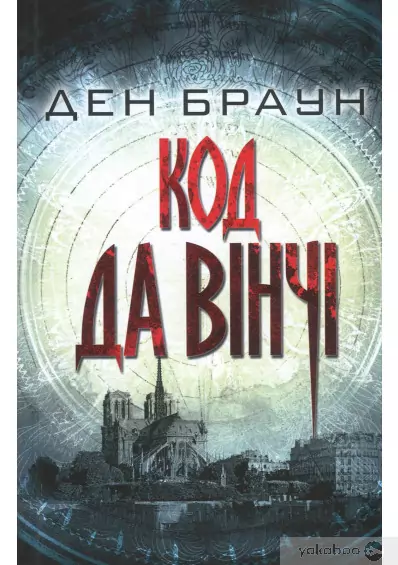
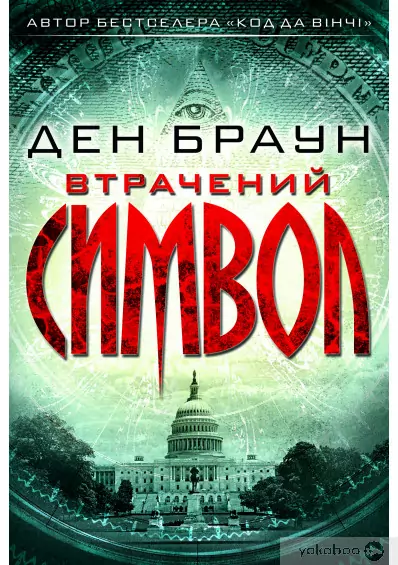
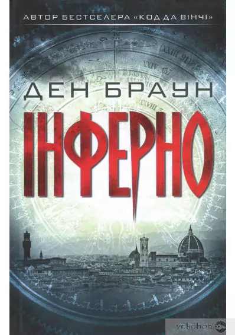
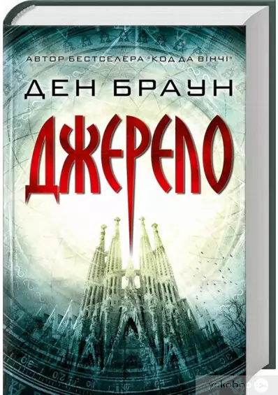
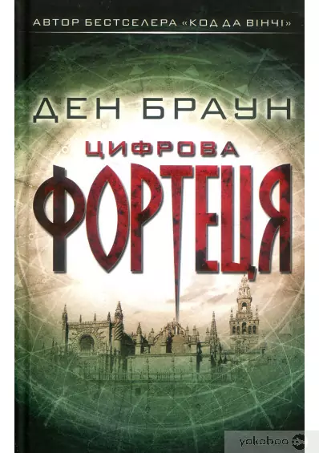
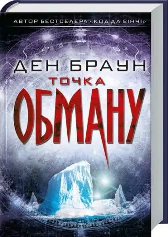
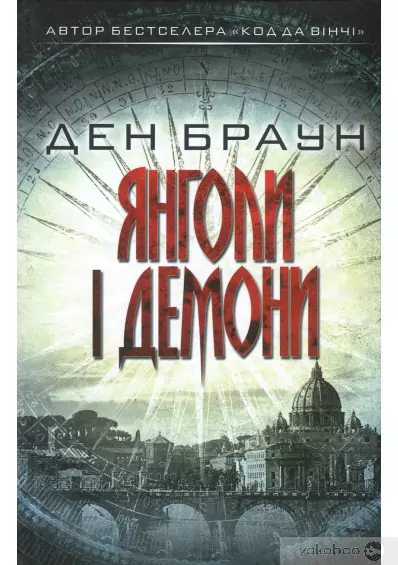

Читати, а не спати — 7
захоплюючих книг Дена Брауна
Ден Браун — сучасний письменник, чиї книги видаються мільйонними тиражами, а на основі них створено три фільми (незабаром вийде четвертий). Книги цього всесвітньо відомого автора обурили багатьох діячів християнської релігії та віруючих людей, їх називали «єретичними» і «безбожними», а за голову письменника була призначена винагорода одним з радикальних індійських католиків.
Знайомтесь, Ден Браун — шкільний учитель, який зумів стати «камінцем у черевику» для одних і улюбленим автором для інших.
Більшість книг Дена Брауна написані у жанрі пригодницького роману з елементами трилера та психологічного детективу. Події розгортаються надзвичайно динамічно і не дають читачу нудьгувати. «Фішкою» Брауна (за що він також отримує велику долю критики) є «збитий у міксері фреш» з незаперечних історичних фактів і припущень різного ступеню правдоподібності, приперчених теоріями змови на будь-який смак.
У книгах Брауна ми зустрінемось з масонами, ілюмінатами, ассасинами, агентами ЦРУ та Інтерполу. Ми будемо подорожувати по Риму, Парижу та Флоренції, познайомимось із видатними архітектурними пам’ятками та витворами мистецтва.
У якій послідовності читати книги Дена Брауна?
Книги Дена Брауна можна читати у будь-якій послідовності, тому що вони не пов’язані між собою.
Ден Браун написав 7 романів і 5 з них описують пригоди професора символіста Роберта Ленґдона. До романів про Роберта Ленґдона належать:
- «Янголи і демони» (2001)
- «Код да Вінчі» (2003)
- «Втрачений символ» (2009)
- «Інферно» (2013)
- «Джерело» (2017)
Дві інші книги з самостійним сюжетом:
Книги Дена Брауна (комплект із 6 книг)«Код да Вінчі (2003)»
Найбільш знаменитий роман автора, книга, яка стала переломною в кар’єрі автора. Після «Коду да Вінчі» (і його екранізації з Томом Генксом, Жаном Рено та Ієном Маккеленом) про письменника дізнався весь світ. Після цієї книги на Брауна посипались тони критики, яка, вірогідно, додатково стимулювала інтерес до роману, зводячи його до рангу бестселера. Роман починається із вбивства Жака Соньєра — куратора Лувру. Головним підозрюваним є його друг Роберт Ленґдон, з яким убитий повинен був зустрітись в день злочину. Проти Роберта свідчить і те, що, вмираючи, Жак із останніх сил написав його ім’я. Дочка Жака Софі не вірить у вину Роберта і допомагає йому втекти від поліції. Разом вони повинні розкрити злочин, розгадавши одну з фундаментальних таємниць історії і християнської віри — таємницю особистості Ісуса Христа та долю його можливих нащадків.
У цьому романі Браун так майстерно жонглює історичними фактами, що навіть людина, яка добре знає історію, може погодитись з логікою в обґрунтуваннях та міркуваннях, наданих у книзі. Приховані символи у картинах та фресках, секрети ордену Тамплієрів, історія про Грааль, таємнича організація Пріорат Зіону — Ден Браун зумів пов’язати це все в одному романі. Кожна розгадка веде до нової загадки, яку також потрібно розгадати. При цьому, читач постійно знаходиться у напрузі, адже пам’ятає, що на п’ятки Ленґдону наступає поліція в особі капітана Безу Фаша.
«Втрачений символ (2009)»
Чергова книга Дена Брауна «Втрачений символ» також розповідає про пригоди Роберта Ленґдона. Цього разу професор виявляється втягнутим в протиборство з повністю татуйованим незнайомцем, який тримає у заручниках його друга, високопоставленого масона Пітера Соломона. Роберт повинен розгадати для лиходія загадки ордену масонів, щоб знайти дві Піраміди, які, як вірить цей орден, знаходяться прямо у Вашингтоні.
«Інферно (2013)»
Професор Ленґдон, який втратив пам’ять про останні декілька днів свого життя, приходить до тями у Флоренції з невідомим циліндром з поміткою «Бактеріологічна небезпека в кишені». На читача чекає надзвичайно динамічний сюжет, схожий місцями на кращі зразки шпигунського кіно з перестрілками, погонями і боротьбою з терористом світового масштабу, який, до всього, є прихильником Данте і його «Божественної комедії». Ленґдону знову випаде нагода продемонструвати свої надзвичайні знання і проявити неабияку кмітливість задля врятування життів мільйонів людей.
«Джерело (2017)»
Цього разу Роберт Ленґдон опиняється в Більбао (Іспанія) на презентації Едмонда Кірша — мільярдера, футуролога і колишнього студента Роберта у Гарварді. Едмонд хоче продемонструвати всім своє відкриття, яке покликане змінити науку назавжди, покласти край епосі релігії та відповісти на питання «звідки ми прийшли?» і «куди йдемо?». Під час презентації Кірша убиває людина, найнята невідомим під псевдонімом Регент, який пов’язаний з Пальмаріанською католицькою церкво
«Цифрова фортеця» (1998)
Перший роман Дена Брауна написаний у жанрі детективного технотрилера. У центрі розповіді —протистояння одного з кращих криптографів Америки Сьюзан Флетчер і таємничого зловмисника, який створив небачений до цих пір код та вступив у смертельну сутичку з Агентством національної безпеки США. Працюючи над розшифровкою, Сьюзан розуміє, що цей код — не те, чим здається, а на карту поставлено значно більше, ніж національна безпека її країни. Хто справжній злочинець? Які цілі переслідує? Що являє собою складний код? Дізнаєтесь на сторінках «Цифрової фортеці».
«Точка обману (2001)»
Гостросюжетний трилер, в якому розповідається про експедицію в Арктику, де був знайдений метеорит із позаземними формами життя. Головна героїня — спеціаліст центрального розвідувального управління США, яка повинна дослідити цей об’єкт. Історія, як це водиться у Брауна, дуже заплутана: крім ЦРУ в історію втягнуті НАСА, спецназ «Дельта», діючий президент країни і його головний конкурент на цю посаду. Нова віха у питанні походження життя чи глобальна містифікація? Відповідь на це дасть «Точка обману».
«Янголи і демони» (2000)
Перший роман про Роберта Ленґдона — професора з релігійної символіки Гарвардського університету, який із книги в книгу потрапляє у низку пригод, так чи інакше пов’язаних з його діяльністю. Сюжет розгортається у Римі, де на фоні виборів нового понтифіка після сотень років мовчання з попелу віків повстав таємничий орден ілюмінатів — заклятих ворогів католицької церкви. За допомогою убивств кардиналів і терору вони йдуть до відомої лише для них цілі. Разом зі швейцарською гвардією Ватикану та ученою-фізиком Вітторією, Роберту Ленґдону необхідно протягом 24 годин розгадати загадки ілюмінатів, які були століттями закриті за ширмою таємниці, щоб врятувати не лише Ватикан, а й увесь Рим. У цьому романі Ден Браун використав більшість елементів, за які через декілька років про нього заговорить увесь світ: неоднозначне ставлення до християнських догматів, доволі логічні пояснення «теорій змови» і плавно вписані в розповідь цікаві факти про історію, архітектуру та символогію.